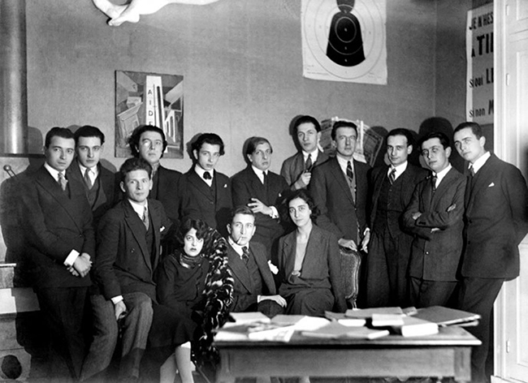

The common assumption concerning what constitutes a Surrealist image is the notion that the properties that make up a photograph can tell the observer whether it belongs to this category, disregarding the historical context involving surrealism.
Properties meaning sign systems, where the meaning overrides the type of picture and what visual elements we see. The confusion or inconsistency of what we are used to seeing in connection to signifier-signified meanings is one approach to determine whether an image is 'surreal'. When the message suggests an 'enigma', for instance. “An enigma, . . . is proposed to the subject by another subject. . . . [It] can only be proposed by someone who does not master the answer, because his message is a compromise-formation in which his unconscious takes part.” 1
Surrealism first originated as a movement in Paris in 1924. Where a group of young Frenchmen led by the poet André Breton experimented with new artistic forms after being greatly influenced by Sigmund Freud's psychoanalysis. It was an avant-garde movement which, like Dada, rebelled against the corrupt, hypocritical society responsible for sending millions to their death in the First World War. They aimed to access the unconscious parts of the mind and reveal one's true nature by practicing automatic writing and drawing. Some even engaged in hypnosis and drug use in their quest to uncover the mysteries of the human psyche.
A somewhat connected group of Surrealist authors and artists met at The Bureau of Surrealist Research in Paris to collaborate, have discussions, and conduct interviews in an effort to "gather all the information possible related to forms that might express the unconscious activity of the mind." It opened on October 11th, 1924, under the direction of Antonin Artaud, just four days before André Breton's first Surrealist Manifesto was published, at 15 Rue de Grenelle (see Figure 1).
